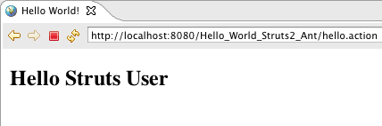

When you click on a hyperlink or submit an HTML form in a Struts 2 web application, the input is not sent to another server page, but to a Java class that you provide. These classes are called Actions. After the Action fires, a Result selects a resource to render the response. The resource is generally a server page, but it can also be a PDF file, an Excel spreadsheet, or a Java applet window.
Suppose you want to create a simple "Hello World" example that displays a welcome message. After setting up an empty basic Struts 2 web application (see How To Create A Struts 2 Web Application), to create a "Hello World" example, you need to do four things:
- Create a class to store the welcome message (the model)
- Create a server page to present the message (the view)
- Create an Action class to control the interaction between the user, the model, and the view (the controller)
- Create a mapping (struts.xml) to couple the Action class and view

By creating these components, we are separating the work flow into three well-known concerns: the View, the Model, and the Controller. Separating concerns makes it easier to manage applications as they become more complex. Let's look at an example model class, Action, server page, and mapping. If you like, fire up your Java IDE, and enter the code as we go.

This tutorial assumes you've completed the How To Create A Struts 2 Web Application tutorial and have a working Basic_Struts2_Ant (or Basic_Struts2_Mvn) project. The example code for this tutorial, Hello_World_Struts2_Ant or Hello_World_Struts2_Mvn, is available on Google Code - http://code.google.com/p/struts2-examples/downloads/list. After downloading and unzipping the file, you'll have a folder named Hello_World_Struts2_Ant (or Hello_World_Struts_Mvn). In that folder will be a README.txt file with instructions on now to build and run the example application.
The Code
Let's modify either the Basic_Struts2_Ant or Basic_Struts2_Mvn project to add a model class to store our message, a view that displays our message, an Action class to act as the controller, and a configuration that ties everything together.
| The Struts 2 user mailing list is an excellent place to get help. If you are having a problem getting this application to work search the Struts 2 mailing list. If you don't find an answer to your problem, post a question on the mailing list. |
Step 1 - Create The Model Class MessageStore.java
If you're using the Basic_Struts2_Ant project to start with create the MessageStore class in the src folder and if you're using the Basic_Struts2_Mvn class create the MessageStore class in src/main/java. Be sure to note the package statement below.
| Note that in the code shown below the JavaDoc comments are omitted. In the download example, JavaDoc comments are included. |
package org.apache.struts.helloworld.model; public class MessageStore { private String message; public MessageStore() { setMessage("Hello Struts User"); } public String getMessage() { return message; } public void setMessage(String message) { this.message = message; } }
In the model class above note the use of public set and get methods to allow access to the private message String attribute. The Struts 2 framework requires that objects you want to expose to the view (HelloWorld.jsp) follow the JavaBean-style conventions.
Step 2 - Create The Action Class HelloWorldAction.java
We need an Action class to act as the Controller. The Action class responds to a user action (in this example that action will be clicking an HTML hyperlink and sending a specific URL to the Servlet container). One or more of the Action class's methods are executed and a String result is returned. Based on the value of the result, a specific view page (in this example that view page is HelloWorld.jsp) is rendered.
Note the package and import statements below.
package org.apache.struts.helloworld.action; import org.apache.struts.helloworld.model.MessageStore; import com.opensymphony.xwork2.ActionSupport; public class HelloWorldAction extends ActionSupport { private static final long serialVersionUID = 1L; private MessageStore messageStore; public String execute() throws Exception { messageStore = new MessageStore() ; return SUCCESS; } public MessageStore getMessageStore() { return messageStore; } public void setMessageStore(MessageStore messageStore) { this.messageStore = messageStore; } }
The Struts 2 framework will create an object of the HelloWorldAction class and call the execute method in response to a user's action (clicking on a hyperlink that sends a specific URL to the Servlet container).
In this example, the execute method creates an object of class MessageStore and then returns the String constant SUCCESS.
Note also the public set and get methods for the private MessageStore object. Since we want to make the MessageStore object available to the view page (HelloWorld.jsp) we need to follow the JavaBean-style of providing get and set methods.
Step 3 - Create The View HelloWorld.jsp
We need a server page to present the message that is stored in the model class MessageStore. Create the below jsp in the WebContent folder (for the Ant project) and in src/main/webapp for the Mvn project).
<%@ page language="java" contentType="text/html; charset=ISO-8859-1" pageEncoding="ISO-8859-1"%> <%@ taglib prefix="s" uri="/struts-tags" %> <!DOCTYPE html PUBLIC "-//W3C//DTD HTML 4.01 Transitional//EN" "http://www.w3.org/TR/html4/loose.dtd"> <html> <head> <meta http-equiv="Content-Type" content="text/html; charset=ISO-8859-1"> <title>Hello World!</title> </head> <body> <h2><s:property value="messageStore.message" /></h2> </body> </html>
The taglib directive tells the Servlet container that this page will be using the Struts 2 tags and that these tags will be preceded by s.
The s:property tag displays the value returned by calling the method getMessageStore of the HelloWorldAction controller class. That method returns a MessageStore object. By adding the .message onto the messageStore part of the value attribute we are telling the Struts 2 framework to then call the getMessage method of that MessageStore object. The getMessage method of class MessageStore returns a String. It is that String that will be displayed by the s:property tag.
We'll learn more about tags in the next tutorial. See the Struts Tags for more information about tags.
Step 4 - Add The Struts Configuration In struts.xml
We need a mapping to tie the URL, the HelloWorldAction class (controller), and
the HelloWorld.jsp (the view) together. The mapping tells the Struts 2 framework which class will respond to the user's action (the URL), which method of that class will be executed, and what view to render based on the String result that method returns.
Edit the struts.xml file (in the Ant project that file is in the src folder and in the Mvn project that file is in the src/main/resources folder) to add the action mapping. Place the action node (action name="hello") between the opening and closing package node, just after the action mapping with the name="index". Your complete struts.xml should look like:
<?xml version="1.0" encoding="UTF-8"?> <!DOCTYPE struts PUBLIC "-//Apache Software Foundation//DTD Struts Configuration 2.0//EN" "http://struts.apache.org/dtds/struts-2.0.dtd"> <struts> <constant name="struts.devMode" value="true" /> <package name="basicstruts2" extends="struts-default"> <action name="index"> <result>/index.jsp</result> </action> <action name="hello" class="org.apache.struts.helloworld.action.HelloWorldAction" method="execute"> <result name="success">/HelloWorld.jsp</result> </action> </package> </struts>
Step 5 - Create The URL Action
In index.jsp (see WebContent folder for Ant project and src/main/webapp for Mvn project) let's add an Action URL the user can click on to tell the Struts 2 framework to run the execute method of the HelloWorldAction class and render the HelloWorld.jsp view.
First add the taglib directive at the top of the jsp <%@ taglib prefix="s" uri="/struts-tags" %>. Next add this p tag <p><a href="<s:url action='hello'/>">Hello World</a></p> after the h1 tag. Your new index.jsp should look like:
<%@ page language="java" contentType="text/html; charset=ISO-8859-1" pageEncoding="ISO-8859-1"%> <%@ taglib prefix="s" uri="/struts-tags" %> <!DOCTYPE html PUBLIC "-//W3C//DTD HTML 4.01 Transitional//EN" "http://www.w3.org/TR/html4/loose.dtd"> <html> <head> <meta http-equiv="Content-Type" content="text/html; charset=ISO-8859-1"> <title>Basic Struts 2 Application - Welcome</title> </head> <body> <h1>Welcome To Struts 2!</h1> <p><a href="<s:url action='hello'/>">Hello World</a></p> </body> </html>
The Struts url tag creates the URL with an action of hello. The hello action was mapped to the HelloWorldAction class and its execute method. When the user clicks on the above URL it will cause the Struts 2 framework to run the execute method of the HelloWorldAction class. After that method returns the String success, the view page HelloWorld.jsp will be rendered.
Step 6 - Build the WAR File and Run The Application
If you're using the Ant version, execute ant archive to create the war file. If you're using the Mvn version execute mvn clean package to create the war file.
Copy the war file to your Servlet container. After your Servlet container successfully deploys the war file go to this URL http://localhost:8080/Hello_World_Struts2_Ant/index.action (for the Ant project) or go to this URL http://localhost:8080/Hello_World_Struts2_Mvn/index.action (for the Mvn project) where you should see the following:

Click on the Hello World link and you should get the HelloWorld.jsp page:

Getting Help
The Struts 2 user mailing list is an excellent place to get help. If you are having a problem getting this application to work search the Struts 2 mailing list. If you don't find an answer to your problem, post a question on the mailing list.
How the Code Works
Your browser sends to the web server a request for the URL http://localhost:8080/Hello_World_Struts2_Ant/hello.action.
- The container receives from the web server a request for the resource hello.action. According to the settings loaded from the web.xml, the container finds that all requests are being routed to org.apache.struts2.dispatcher.ng.filter.StrutsPrepareAndExecuteFilter, including the *.action requests. The StrutsPrepareAndExecuteFilter is the entry point into the framework.
- The framework looks for an action mapping named "hello", and it finds that this mapping corresponds to the class "HelloWorldAction". The framework instantiates the Action and calls the Action's execute method.
- The execute method creates the MessageStore object and returns SUCCESS. The framework checks the action mapping to see what page to load if SUCCESS is returned. The framework tells the container to render as the response to the request, the resource HelloWorld.jsp.
- As the page HelloWorld.jsp is being processed, the <s:property value="messageStore.message" /> tag calls the getter getMessageStore of the HelloWorld Action and then calls the getMessage of the MessageStore object returned by getMessageStore, and the tag merges into the response the value of the message attribute.
- A pure HTML response is sent back to the browser.
What to Remember
The framework uses Actions to process HTML forms and other requests. The Action class returns a result-name such as SUCCESS, ERROR, or INPUT. Based on the mappings loaded from the struts.xml, a given result-name may select a page (as in this example), another action, or some other web resource (image, PDF).
When a server page is rendered, most often it will include dynamic data provided by the Action. To make it easy to display dynamic data, the framework provides a set of tags that can be used along with HTML markup to create a server page.
| Next | Onward to Using Struts 2 Tags |
|---|---|
| Prev | Return to How To Create A Struts 2 Web Application |